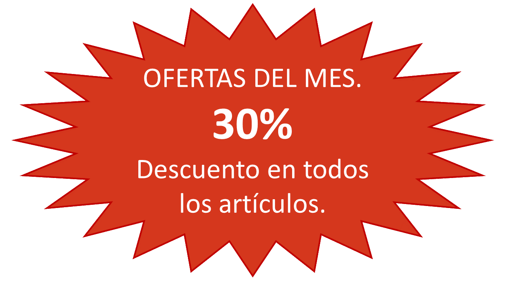

AXOTL

El axolote o ajolote es un animal que ha estado en la vida de los mexicanos desde la época de los aztecas. Según dicha mitología, está relacionado al dios xólotl, hermano de quetzalcóatl, quien se encuentra asociado a la idea del movimiento y de la vida, de acuerdo con la leyenda del quinto sol. El ajolote mexicano es un anfibio que está relacionado con antiguos mitos mexicas. Su nombre en náhuatl (axólotl) quiere decir “xólotl de agua” y se ha traducido como “juguete de agua”, “monstruo acuático”, “gemelo de agua” o “perro de agua”. Actualmente aún habita exclusivamente en el imperio antiguo del valle de méxico. Este “monstruo” es tímido y siempre busca lugares para esconderse.